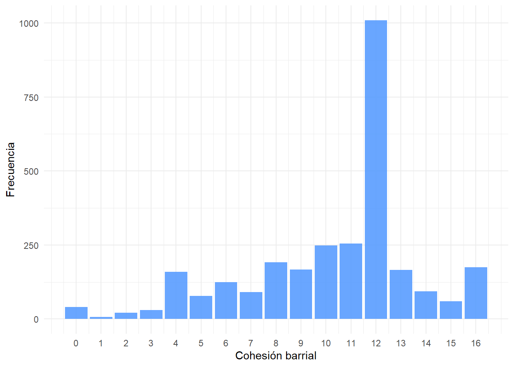
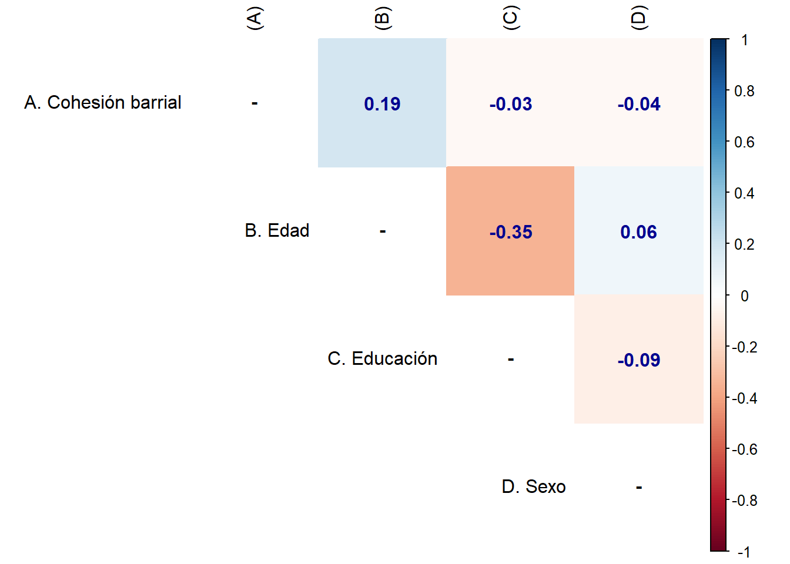
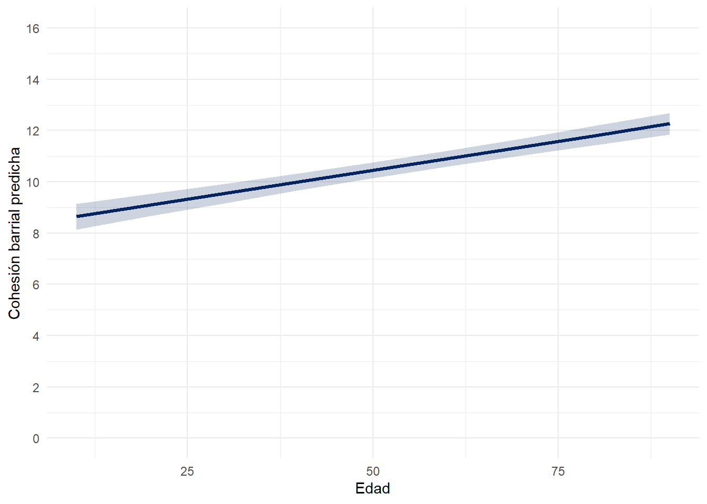
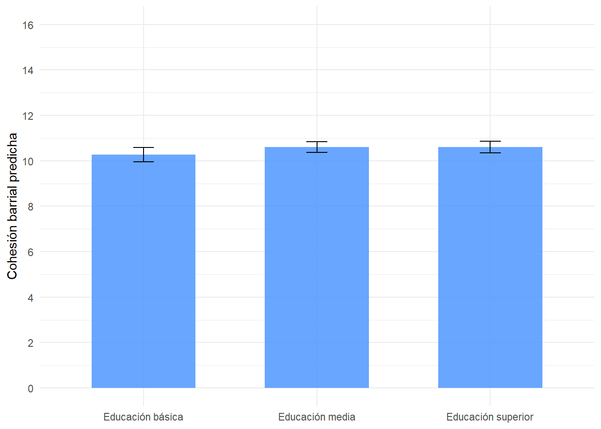

pacman::p_load(dplyr,
car,
sjmisc,
sjlabelled,
sjPlot,
kableExtra,
summarytools,
corrplot,
psych,
ggeffects,
ggplot2)Práctico 07. Variables categóricas y síntesis de regresión lineal
Métodos estadísticos para Ciencias Sociales III
1 Presentación
1.1 Objetivo de la práctica
Esta guía cumple dos propósitos.
El primero es cerrar el contenido que quedaba pendiente: la incorporación de variables categóricas como predictores en un modelo de regresión.
El segundo es sintetizar todo el recorrido de la primera parte del curso. Desde la construcción de una escala hasta la presentación de valores predichos, aquí encontrará el flujo completo de un análisis de regresión, que es el mismo que deberán seguir en el informe.
Al terminar, usted debería ser capaz de:
- Declarar correctamente una variable como categórica en R e incorporarla a un modelo
- Interpretar el coeficiente de una variable dummy y el de una politómica
- Identificar la categoría de referencia y modificarla
- Recorrer de manera autónoma el flujo completo: procesamiento, descriptivos, asociación, modelos, ajuste, inferencia y valores predichos
1.2 Los datos
Trabajaremos con la cohesión barrial en ELSOC 2016, construida a partir de cuatro ítems del módulo de territorio. Es un ejemplo distinto de los que hemos usado hasta ahora, de modo que sirve también como ensayo del informe.
2 Preparación
2.1 Librerías
rm(list = ls())
options(scipen = 999)
st_options(bootstrap.css = FALSE,
plain.ascii = FALSE,
style = "rmarkdown",
dfSummary.silent = TRUE,
footnote = NA,
subtitle.emphasis = FALSE)2.2 Carga de datos
load(url("https://github.com/Kevin-carrasco/metod3-unab/raw/refs/heads/main/files/data/elsoc16-22.RData"))2.3 Selección de variables
proc_data <- elsoc_long_2016_2022.2 %>%
filter(ola == 1) %>%
select(t02_01, # Este barrio es ideal para mí
t02_02, # Me siento integrado en este barrio
t02_03, # Me identifico con la gente de este barrio
t02_04, # Este barrio es parte de mí
m01, # Nivel educacional
m0_sexo, # Sexo
m0_edad) # Edad
names(proc_data)[1] "t02_01" "t02_02" "t02_03" "t02_04" "m01" "m0_sexo" "m0_edad"get_label(proc_data) t02_01
"Grado de acuerdo: Este es el barrio ideal para mi"
t02_02
"Grado de acuerdo: Me siento integrado/a en este barrio"
t02_03
"Grado de acuerdo: Me identifico con la gente de este barrio"
t02_04
"Grado de acuerdo: Este barrio es parte de mi"
m01
"Nivel educacional"
m0_sexo
"Sexo del entrevistado"
m0_edad
"Edad del entrevistado" 3 Procesamiento
3.1 Casos perdidos
frq(proc_data$t02_01)Grado de acuerdo: Este es el barrio ideal para mi (x) <numeric>
# total N=2927 valid N=2927 mean=3.31 sd=16.51
Value | Label | N | Raw % | Valid % | Cum. %
-------------------------------------------------------------------------------
-999 | No Responde | 0 | 0.00 | 0.00 | 0.00
-888 | No Sabe | 1 | 0.03 | 0.03 | 0.03
-777 | Valor perdido por error tecnico | 0 | 0.00 | 0.00 | 0.03
-666 | Valor perdido por encuesta incompleta | 0 | 0.00 | 0.00 | 0.03
1 | Totalmente en desacuerdo | 114 | 3.89 | 3.89 | 3.93
2 | En desacuerdo | 413 | 14.11 | 14.11 | 18.04
3 | Ni de acuerdo ni en desacuerdo | 379 | 12.95 | 12.95 | 30.99
4 | De acuerdo | 1599 | 54.63 | 54.63 | 85.62
5 | Totalmente de acuerdo | 421 | 14.38 | 14.38 | 100.00
<NA> | <NA> | 0 | 0.00 | <NA> | <NA>Aparecen los códigos −999, −888, −777 y −666, que corresponden a no respuesta y que debemos declarar como casos perdidos:
proc_data <- proc_data %>%
set_na(., na = c(-999, -888, -777, -666))3.2 Recodificación de los ítems
Las categorías van de 1 a 5. Para construir la escala conviene que la más baja sea 0:
proc_data$t02_01 <- recode(proc_data$t02_01, "1=0; 2=1; 3=2; 4=3; 5=4")
proc_data$t02_02 <- recode(proc_data$t02_02, "1=0; 2=1; 3=2; 4=3; 5=4")
proc_data$t02_03 <- recode(proc_data$t02_03, "1=0; 2=1; 3=2; 4=3; 5=4")
proc_data$t02_04 <- recode(proc_data$t02_04, "1=0; 2=1; 3=2; 4=3; 5=4")3.3 Nombres y etiquetas
proc_data <- proc_data %>%
rename("ideal" = t02_01,
"integracion" = t02_02,
"identificacion" = t02_03,
"pertenencia" = t02_04,
"educacion" = m01,
"sexo" = m0_sexo,
"edad" = m0_edad)proc_data$ideal <- set_label(proc_data$ideal,
label = "Este barrio es ideal para mí")
proc_data$integracion <- set_label(proc_data$integracion,
label = "Me siento integrado en este barrio")
proc_data$identificacion <- set_label(proc_data$identificacion,
label = "Me identifico con la gente de este barrio")
proc_data$pertenencia <- set_label(proc_data$pertenencia,
label = "Este barrio es parte de mí")Al recodificar, las etiquetas de los valores quedaron desalineadas respecto de los nuevos códigos. Las corregimos con set_labels:
etiquetas <- c("Totalmente en desacuerdo" = 0,
"En desacuerdo" = 1,
"Ni de acuerdo ni en desacuerdo" = 2,
"De acuerdo" = 3,
"Totalmente de acuerdo" = 4)
proc_data$ideal <- set_labels(proc_data$ideal, labels = etiquetas)
proc_data$integracion <- set_labels(proc_data$integracion, labels = etiquetas)
proc_data$identificacion <- set_labels(proc_data$identificacion, labels = etiquetas)
proc_data$pertenencia <- set_labels(proc_data$pertenencia, labels = etiquetas)
frq(proc_data$ideal)Este barrio es ideal para mí (x) <numeric>
# total N=2927 valid N=2926 mean=2.62 sd=1.02
Value | Label | N | Raw % | Valid % | Cum. %
------------------------------------------------------------------------
0 | Totalmente en desacuerdo | 114 | 3.89 | 3.90 | 3.90
1 | En desacuerdo | 413 | 14.11 | 14.11 | 18.01
2 | Ni de acuerdo ni en desacuerdo | 379 | 12.95 | 12.95 | 30.96
3 | De acuerdo | 1599 | 54.63 | 54.65 | 85.61
4 | Totalmente de acuerdo | 421 | 14.38 | 14.39 | 100.00
<NA> | <NA> | 1 | 0.03 | <NA> | <NA>3.4 Casos completos
proc_data <- na.omit(proc_data)
nrow(proc_data)[1] 29154 Construcción de la escala
4.1 Consistencia interna
psych::alpha(proc_data %>% select(ideal, integracion, identificacion, pertenencia))$total$raw_alpha[1] 0.871842La consistencia interna es alta, lo que respalda la construcción de una escala con los cuatro ítems. La salida completa de psych::alpha permite además verificar si la consistencia mejoraría al eliminar alguno.
4.2 El puntaje
proc_data <- proc_data %>%
mutate(cohesion = ideal + integracion + identificacion + pertenencia)
summary(proc_data$cohesion) Min. 1st Qu. Median Mean 3rd Qu. Max.
0.00 8.00 12.00 10.34 12.00 16.00 La escala va de 0 a 16, con una media cercana a 10,3.
ggplot(proc_data, aes(x = cohesion)) +
geom_bar(fill = "#4f97ff", alpha = 0.85) +
scale_x_continuous(breaks = 0:16) +
labs(x = "Cohesión barrial", y = "Frecuencia") +
theme_minimal()
5 Variables categóricas
Esta sección cubre el contenido que quedó pendiente: cómo incorporar predictores que no son numéricos.
5.1 El problema
Revisemos nuestras variables independientes:
frq(proc_data$sexo)x <numeric>
# total N=2915 valid N=2915 mean=1.60 sd=0.49
Value | N | Raw % | Valid % | Cum. %
---------------------------------------
1 | 1158 | 39.73 | 39.73 | 39.73
2 | 1757 | 60.27 | 60.27 | 100.00
<NA> | 0 | 0.00 | <NA> | <NA>frq(proc_data$educacion)x <numeric>
# total N=2915 valid N=2915 mean=5.26 sd=2.20
Value | N | Raw % | Valid % | Cum. %
--------------------------------------
1 | 37 | 1.27 | 1.27 | 1.27
2 | 321 | 11.01 | 11.01 | 12.28
3 | 297 | 10.19 | 10.19 | 22.47
4 | 394 | 13.52 | 13.52 | 35.99
5 | 854 | 29.30 | 29.30 | 65.28
6 | 102 | 3.50 | 3.50 | 68.78
7 | 379 | 13.00 | 13.00 | 81.78
8 | 183 | 6.28 | 6.28 | 88.06
9 | 302 | 10.36 | 10.36 | 98.42
10 | 46 | 1.58 | 1.58 | 100.00
<NA> | 0 | 0.00 | <NA> | <NA>Ambas están guardadas como números, pero esos números son etiquetas y no cantidades. Si las incorporamos tal cual, R las tratará como continuas y estimará un único coeficiente, lo que supondría que las categorías están ordenadas y son equidistantes.
5.2 Declarar una variable como categórica
La función as_factor() convierte una variable etiquetada en un factor, utilizando sus etiquetas como niveles:
proc_data$sexo_f <- as_factor(proc_data$sexo)
class(proc_data$sexo_f)[1] "factor"levels(proc_data$sexo_f)[1] "1" "2"
NotaLa regla
as_factor() para variables que ya traen etiquetas desde la base original.
factor() cuando usted mismo define las categorías y sus nombres.
El primer nivel del factor pasa a ser la categoría de referencia del modelo.
5.3 Una variable dicotómica
modelo_sexo <- lm(cohesion ~ sexo_f, data = proc_data)
coef(modelo_sexo)(Intercept) sexo_f2
10.4948187 -0.2631738 Comparemos con los promedios de cada grupo:
proc_data %>%
group_by(sexo_f) %>%
summarise(media = mean(cohesion), n = n())# A tibble: 2 × 3
sexo_f media n
<fct> <dbl> <int>
1 1 10.5 1158
2 2 10.2 1757El intercepto coincide exactamente con el promedio del primer grupo, y el coeficiente es la diferencia entre ambos promedios. Esa es la interpretación de una variable dummy: una diferencia de medias.
tab_model(modelo_sexo,
show.se = TRUE,
show.ci = FALSE,
digits = 3,
p.style = "stars",
dv.labels = c("Cohesión barrial"),
string.pred = "Predictores",
string.est = "β")| Cohesión barrial | ||
|---|---|---|
| Predictores | β | std. Error |
| (Intercept) | 10.495 *** | 0.100 |
| sexo f [2] | -0.263 * | 0.129 |
| Observations | 2915 | |
| R2 / R2 adjusted | 0.001 / 0.001 | |
| * p<0.05 ** p<0.01 *** p<0.001 | ||
5.4 Una variable con más de dos categorías
El nivel educacional tiene diez categorías. Para facilitar la interpretación lo agrupamos en tres:
proc_data$educ_rec <- car::recode(proc_data$educacion,
"c(1,2,3)=1; c(4,5)=2; c(6,7,8,9,10)=3")
proc_data$educ_f <- factor(proc_data$educ_rec,
levels = c(1, 2, 3),
labels = c("Educación básica",
"Educación media",
"Educación superior"))
frq(proc_data$educ_f)x <categorical>
# total N=2915 valid N=2915 mean=2.12 sd=0.75
Value | N | Raw % | Valid % | Cum. %
----------------------------------------------------
Educación básica | 655 | 22.47 | 22.47 | 22.47
Educación media | 1248 | 42.81 | 42.81 | 65.28
Educación superior | 1012 | 34.72 | 34.72 | 100.00
<NA> | 0 | 0.00 | <NA> | <NA>modelo_educ <- lm(cohesion ~ educ_f, data = proc_data)
tab_model(modelo_educ,
show.se = TRUE,
show.ci = FALSE,
digits = 3,
p.style = "stars",
dv.labels = c("Cohesión barrial"),
string.pred = "Predictores",
string.est = "β")| Cohesión barrial | ||
|---|---|---|
| Predictores | β | std. Error |
| (Intercept) | 10.515 *** | 0.133 |
| educ f [Educación media] | -0.134 | 0.164 |
| educ f [Educación superior] |
-0.348 * | 0.170 |
| Observations | 2915 | |
| R2 / R2 adjusted | 0.002 / 0.001 | |
| * p<0.05 ** p<0.01 *** p<0.001 | ||
Observe que con tres categorías aparecen dos coeficientes. La regla general es que con \(k\) categorías se estiman \(k-1\) coeficientes: la categoría omitida es la de referencia y queda representada en el intercepto.
5.5 La categoría de referencia
proc_data %>%
group_by(educ_f) %>%
summarise(media = mean(cohesion))# A tibble: 3 × 2
educ_f media
<fct> <dbl>
1 Educación básica 10.5
2 Educación media 10.4
3 Educación superior 10.2Cada coeficiente es la diferencia respecto de educación básica, no respecto de la categoría anterior. Verifíquelo sumando el intercepto y cada coeficiente: obtendrá exactamente los promedios de la tabla.
Si nos interesa otro punto de comparación, podemos cambiar la referencia:
proc_data$educ_f2 <- relevel(proc_data$educ_f, ref = "Educación superior")
tab_model(lm(cohesion ~ educ_f2, data = proc_data),
show.se = TRUE,
show.ci = FALSE,
digits = 3,
p.style = "stars",
dv.labels = c("Cohesión barrial"),
string.pred = "Predictores",
string.est = "β")| Cohesión barrial | ||
|---|---|---|
| Predictores | β | std. Error |
| (Intercept) | 10.166 *** | 0.107 |
| educ f2 [Educación básica] |
0.348 * | 0.170 |
| educ f2 [Educación media] | 0.215 | 0.144 |
| Observations | 2915 | |
| R2 / R2 adjusted | 0.002 / 0.001 | |
| * p<0.05 ** p<0.01 *** p<0.001 | ||
ImportanteQué cambia y qué no
Cambiar la categoría de referencia no modifica el modelo: el \(R^2\), los valores predichos y las diferencias entre grupos son idénticos. Lo único que cambia es respecto de qué grupo se expresan los coeficientes.
6 Síntesis: el flujo completo
De aquí en adelante recorremos el procedimiento completo de un análisis de regresión, que es el mismo que utilizarán en el informe.
6.1 Paso 1: descriptivos
proc_data_an <- proc_data %>%
select(cohesion, edad, educacion, sexo)
descr(proc_data_an,
stats = c("mean", "sd", "min", "med", "max", "n.valid"),
transpose = TRUE,
order = "preserve") %>%
kable(digits = 2) %>%
kable_styling(bootstrap_options = c("striped", "hover"),
full_width = FALSE)| Mean | Std.Dev | Min | Median | Max | N.Valid | |
|---|---|---|---|---|---|---|
| cohesion | 10.34 | 3.40 | 0 | 12 | 16 | 2915 |
| edad | 46.11 | 15.29 | 18 | 46 | 88 | 2915 |
| educacion | 5.26 | 2.20 | 1 | 5 | 10 | 2915 |
| sexo | 1.60 | 0.49 | 1 | 2 | 2 | 2915 |
6.2 Paso 2: asociación
M <- cor(proc_data_an, use = "complete.obs")
diag(M) <- NA
rownames(M) <- c("A. Cohesión barrial", "B. Edad",
"C. Educación", "D. Sexo")
colnames(M) <- c("(A)", "(B)", "(C)", "(D)")
corrplot(M,
method = "color",
addCoef.col = "#000390",
type = "upper",
tl.col = "black",
na.label = "-")
AdvertenciaUna advertencia sobre esta matriz
La variable sexo es nominal, de modo que su correlación de Pearson con las demás no tiene una interpretación válida. Aparece aquí únicamente porque cor() opera sobre columnas numéricas sin distinguir su nivel de medición.
En su informe, incluya en la matriz de correlaciones solo las variables continuas.
6.3 Paso 3: el modelo nulo
¿Qué ocurre si estimamos una regresión sin ningún predictor?
reg0 <- lm(cohesion ~ 1, data = proc_data)
coef(reg0)(Intercept)
10.33619 mean(proc_data$cohesion)[1] 10.33619El intercepto equivale a la media de la variable dependiente. Sin información adicional, la mejor predicción para cualquier persona es el promedio general. Todo lo que hacen las variables independientes es mejorar esa predicción.
6.4 Paso 4: modelos simples y múltiple
reg1 <- lm(cohesion ~ edad, data = proc_data)
reg2 <- lm(cohesion ~ educ_f, data = proc_data)
reg3 <- lm(cohesion ~ sexo_f, data = proc_data)
reg4 <- lm(cohesion ~ edad + educ_f + sexo_f, data = proc_data)tab_model(list(reg1, reg2, reg3, reg4),
show.se = TRUE,
show.ci = FALSE,
digits = 3,
p.style = "stars",
dv.labels = c("Modelo 1", "Modelo 2", "Modelo 3", "Modelo 4"),
string.pred = "Predictores",
string.est = "β")| Modelo 1 | Modelo 2 | Modelo 3 | Modelo 4 | |||||
|---|---|---|---|---|---|---|---|---|
| Predictores | β | std. Error | β | std. Error | β | std. Error | β | std. Error |
| (Intercept) | 8.425 *** | 0.197 | 10.515 *** | 0.133 | 10.495 *** | 0.100 | 8.188 *** | 0.289 |
| edad | 0.041 *** | 0.004 | 0.045 *** | 0.004 | ||||
| educ f [Educación media] | -0.134 | 0.164 | 0.327 | 0.168 | ||||
| educ f [Educación superior] |
-0.348 * | 0.170 | 0.332 | 0.181 | ||||
| sexo f [2] | -0.263 * | 0.129 | -0.327 ** | 0.127 | ||||
| Observations | 2915 | 2915 | 2915 | 2915 | ||||
| R2 / R2 adjusted | 0.035 / 0.034 | 0.002 / 0.001 | 0.001 / 0.001 | 0.039 / 0.037 | ||||
| * p<0.05 ** p<0.01 *** p<0.001 | ||||||||
6.5 Paso 5: interpretación
Observe con atención qué le ocurre al coeficiente de educación entre el modelo 2 y el modelo 4.
data.frame(
Coeficiente = c("Educación media", "Educación superior"),
Modelo_2 = coef(reg2)[2:3],
Modelo_4 = coef(reg4)[3:4]
) %>%
kable(digits = 3, row.names = FALSE) %>%
kable_styling(full_width = FALSE)| Coeficiente | Modelo_2 | Modelo_4 |
|---|---|---|
| Educación media | -0.134 | 0.327 |
| Educación superior | -0.348 | 0.332 |
Los coeficientes cambian de signo. Estimada por sí sola, la educación se asocia negativamente con la cohesión barrial; al controlar por edad, la asociación se vuelve positiva.
La explicación está en la correlación entre los predictores: las personas mayores tienen en promedio menor nivel educacional y mayor cohesión barrial. En el modelo 2, el coeficiente de educación arrastraba ese efecto de la edad. Al parcializar, la asociación se limpia.
ImportanteLo que esto enseña
Nunca se interpreta un coeficiente sin señalar qué variables están en el modelo. El mismo predictor puede tener signos opuestos según lo que se controle, y ambas cifras son correctas: responden a preguntas distintas.
6.6 Paso 6: ajuste
El modelo completo explica alrededor de un 4% de la varianza de la cohesión barrial. Es un valor bajo, esperable cuando se trabaja únicamente con variables sociodemográficas: la cohesión de un barrio depende de muchos factores que no están en el modelo, como el tiempo de residencia, el tipo de vivienda o la seguridad del sector.
6.7 Paso 7: estandarización
datos_std <- proc_data %>%
select(cohesion, edad) %>%
scale() %>%
data.frame()
datos_std$educ_f <- proc_data$educ_f
datos_std$sexo_f <- proc_data$sexo_f
reg4_std <- lm(cohesion ~ edad + educ_f + sexo_f, data = datos_std)
tab_model(list(reg4, reg4_std),
show.se = FALSE,
show.ci = FALSE,
digits = 3,
p.style = "stars",
dv.labels = c("No estandarizado", "Estandarizado"),
string.pred = "Predictores",
string.est = "β")| No estandarizado | Estandarizado | |
|---|---|---|
| Predictores | β | β |
| (Intercept) | 8.188 *** | -0.017 |
| edad | 0.045 *** | 0.204 *** |
| educ f [Educación media] | 0.327 | 0.096 |
| educ f [Educación superior] |
0.332 | 0.098 |
| sexo f [2] | -0.327 ** | -0.096 ** |
| Observations | 2915 | 2915 |
| R2 / R2 adjusted | 0.039 / 0.037 | 0.039 / 0.037 |
| * p<0.05 ** p<0.01 *** p<0.001 | ||
AdvertenciaQué estandarizar y qué no
Note que estandarizamos únicamente la variable dependiente y la edad, dejando los factores sin transformar.
Estandarizar una variable categórica no tiene sentido: una desviación estándar de sexo o de nivel educacional no corresponde a ninguna cantidad interpretable. Cuando el modelo combina predictores continuos y categóricos, la práctica habitual es estandarizar solo los continuos, y los coeficientes de las categóricas se siguen leyendo como diferencias de medias, ahora expresadas en desviaciones estándar de la variable dependiente.
6.8 Paso 8: valores predichos
Para un predictor continuo:
ggpredict(reg4, terms = "edad") %>%
ggplot(aes(x = x, y = predicted)) +
geom_line(color = "#04245f", linewidth = 1.2) +
geom_ribbon(aes(ymin = conf.low, ymax = conf.high),
alpha = 0.2, fill = "#04245f") +
scale_y_continuous(limits = c(0, 16), breaks = seq(0, 16, 2)) +
labs(x = "Edad", y = "Cohesión barrial predicha") +
theme_minimal()
Para un predictor categórico:
ggpredict(reg4, terms = "educ_f") %>%
ggplot(aes(x = x, y = predicted)) +
geom_col(fill = "#4f97ff", alpha = 0.85, width = 0.6) +
geom_errorbar(aes(ymin = conf.low, ymax = conf.high), width = 0.12) +
scale_y_continuous(limits = c(0, 16), breaks = seq(0, 16, 2)) +
labs(x = NULL, y = "Cohesión barrial predicha") +
theme_minimal()
En ambos casos el eje vertical recorre la escala completa de la variable dependiente, de 0 a 16. Recuerde que ajustar el eje al rango de los valores predichos exagera visualmente la magnitud del efecto.
7 Ejercicios
Los siguientes ejercicios reproducen el flujo completo con otras variables. Sirven como ensayo directo del informe.
7.1 Procesamiento
Cargue la base ELSOC y filtre por la ola 4 (2019). Seleccione los cuatro ítems de cohesión barrial, más educación, sexo y edad.
Declare los casos perdidos, recodifique los ítems de 0 a 4, renombre las variables y conserve los casos completos. Reporte el N final.
Verifique la consistencia interna de los cuatro ítems y construya la escala.
7.2 Variables categóricas
Recodifique el nivel educacional en tres categorías y declárelo como factor. Reporte la distribución de frecuencias.
Estime un modelo que incluya únicamente el sexo como variable independiente. Verifique que el intercepto coincide con el promedio del grupo de referencia y que cada coeficiente equivale a la diferencia de promedios correspondiente.
Cambie la categoría de referencia a hombre y vuelva a estimar. Compare el \(R^2\) de ambos modelos y explique por qué es idéntico.
7.3 Modelos
Estime los tres modelos simples y el modelo múltiple, y preséntelos en una tabla conjunta.
Identifique algún coeficiente que cambie de manera relevante entre el modelo simple y el múltiple, y explique a qué se debe.
Compare el \(R^2\) y el \(R^2\) ajustado de los cuatro modelos.
7.4 Presentación
Estandarice la variable dependiente y los predictores continuos, y compare los coeficientes con los del modelo original.
Elabore un gráfico de valores predichos para cada predictor estadísticamente significativo, con el eje vertical en la escala completa de la variable dependiente.
Redacte un párrafo de máximo 300 palabras que reporte el modelo múltiple: interprete los coeficientes de la variable categórica indicando la categoría de referencia, señale cuáles resultan significativos, comente el \(R^2\) y mencione una limitación del análisis.